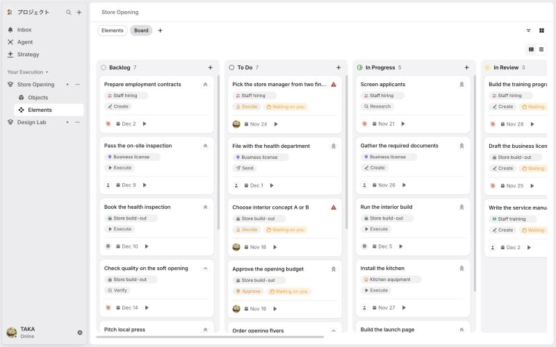

Write a goal, and AI drafts the plan of work. Nothing runs until a person checks it.
Write the purpose and success criteria in a Portfolio. AI asks about missing assumptions and splits the work into Objects (close to projects) and Elements (the smallest units of work).
- Write the PortfolioPurpose, assumptions, decisions and success criteria
- AI drafts the planAsks about missing assumptions and splits the work into Objects and Elements, checking for circular dependencies and references to things that don’t exist
- A person checksReview and edit the plan before it is created. No work starts until then
- Check progressThe number of finished Elements and the success criteria met are shown separately


Strategy for what to achieve, Execution for who does what
Every Element can be traced to the Strategy it serves.
StrategyWhat to achieve: Vision and Portfolio
A Vision is the goal of the Space. Portfolios are the routes to win it, and they nest. Both hold the purpose, assumptions, decisions and success criteria (what counts as achieved), and have no owner or progress.
ObjectExecution: a grouping of work
Close to a project, placed in a Domain (an area of work such as a department or a business). Has a deadline, a lead, progress, milestones and a status (stage).
ElementExecution: the smallest unit of work
Has an owner, a deadline, progress, dependencies on other Elements, and a kind of work (13 kinds, such as research, create and approve). Judge, decide, approve and answer can only be owned by a person.
Seven statuses for an Element
Each status has its own mark, so it can be told apart by shape, not only by color.
- BacklogNot planned yet
- To DoPlanned, not started
- In ProgressStarted. The inner disc fills with progress
- In ReviewWaiting for a person to check
- DoneFinished. Progress is 100%
- BlockedCannot move until something is resolved
- CancelledStopped, and kept in the record
How progress is drawn
Progress bar
When progress falls behind the days left before the deadline, the bar turns red from its tip. It also turns red when an Element is blocked or overdue.
Milestones
Put dated milestones on an Object. The diamond mark fills in by the share of Elements due by that date that are done.
In Progress mark
The mark fills with the progress entered for the Element (0–100%). Setting an Element to Done makes it 100%; moving it back from Done sets it to 75%.
What you can check while the plan is underway
- How owners are chosen
- When AI drafts the plan, it picks owners from the Space’s members by the rule written in the harness.
- Why the work exists
- From an Element’s page, open the success criterion, assumption or decision it is based on.
- Effect of a Strategy change
- When a success criterion or assumption changes, the Elements based on it are shown.
- Waiting on a person
- Elements that need a person’s judgment, and runs waiting for an approval or an answer, are listed first in the Inbox.
- Record of changes
- Status changes, owner changes, approval requests and approvals are shown on a timeline. Work done while waiting for approval is drawn as a branch.
- Status
- Objects and Strategies are in one of five stages: Backlog, Planned, In Progress, Completed or Canceled. Each organization can add its own statuses under a stage.